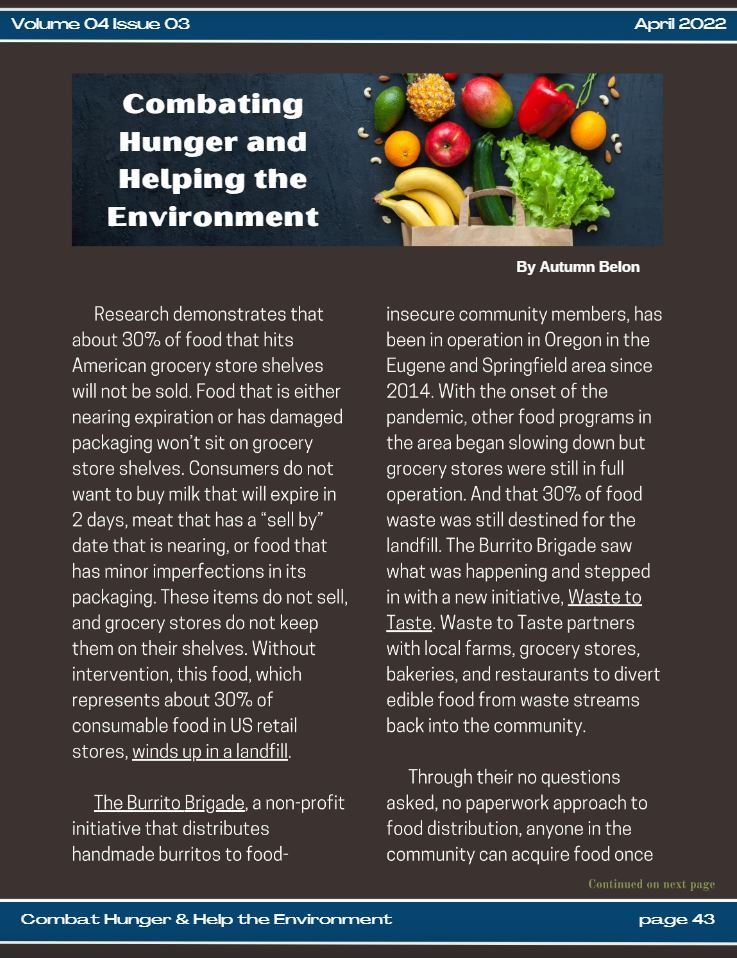
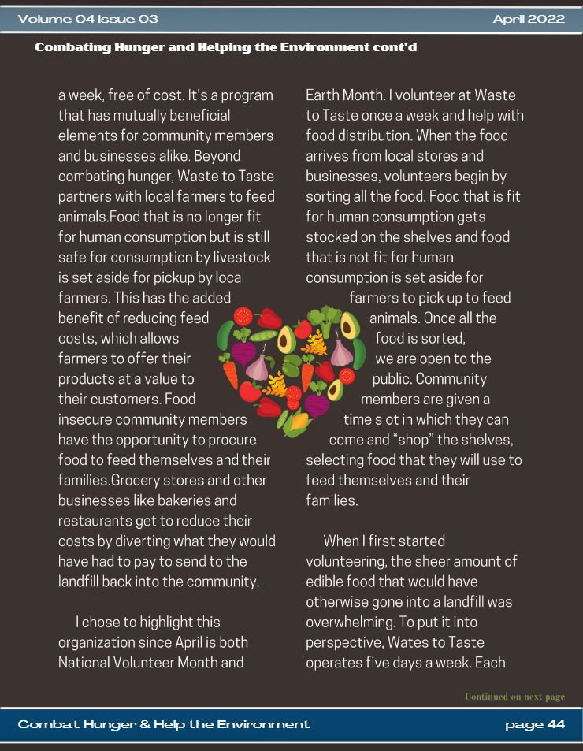
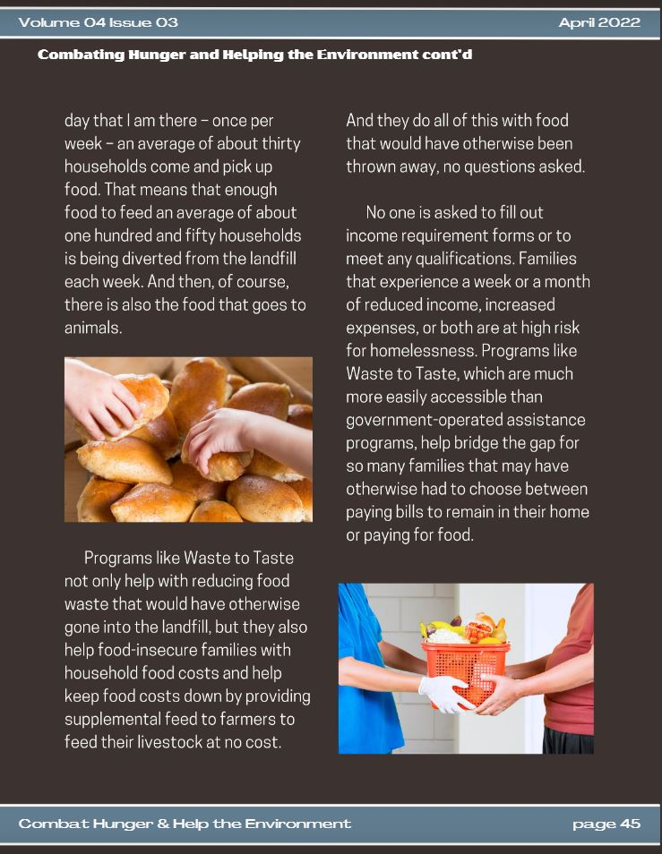

Writing for The Spark
The Client:
The Spark at ASU - A Journalistic Collaboration of the Arizona State University Online Community
The Ask:
In collaboration with the writing team, create engaging content relevant to current events and student life.
Process Overview:
- Pitch Meeting
- Article Submission
- Editing
- Publication
Process Details:
Pitch Meeting
Article Submission
Editing
Publication
The Spark was a quarterly publication. Pitch meetings followed the same cadence, conducted after publication of the previous quarter's edition.
Prior to the pitch meeting, I would brainstorm topics that interested me, research current events, and compile a list of content I was considering writing.
At the pitch meeting, writers would bring ideas for the next publication and the team would discuss a theme for the upcoming edition based upon pitched content and current events. I would pitch my ideas based on the agreed upon theme and current events.
After the pitch meeting, I would write the content discussed in the pitch meeting and submit the article for review.
My process for writing is to first create a general outline of what I want to discuss in my article. With the outline complete, I begin by writing a first draft. I then read over the first draft, correcting any spelling and grammattical errors, and ensuring the content is organized in a logical and compelling manner.
Finally, I focus on creating an engaging introductory statement to draw the reader in and make them want to read more.
Submitted articles would be assigned to one of the editors from the editing team. The editors would review the content and make editing suggestions.
After receiving the editing team's suggestions, I would either implement their suggestions or discuss the suggestions with them for further context. After editing was complete, the article was ready to publish.
After editing, the final step in the process was publication. Written articles would next go to the design team for design and publication.
Several articles I wrote for The Spark were published in the quarterly publication.
  